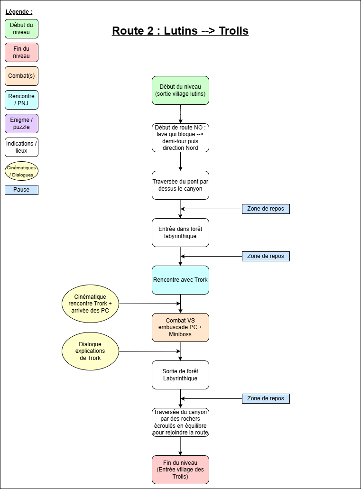

Capture d'écran du jeu

Dans le cadre de la sensibilisation au parcours de soins des grands brûlés, l'association Burns & Smiles a lancé le projet de créer un jeu éducatif visant à accompagner les victimes de brûlures (et notamment les jeunes enfants) avec l'aide d'Alten.
J'ai eu la chance de participer à ce projet dès ses prémices en tant que Game Designer puis Level Designer entre Juillet 2024 et Avril 2026, étant consultant chez Alten et en attente de mission à ce moment-là.
J'ai ainsi pu contribué à la conceptualisation du jeu et à son scénario, avant de devenir responsable du design des cartes de l'aventure une fois le concept et les outils définis.
Afin de ne pas mélanger les parties game et level design sur lesquelles j'ai travaillé, je ne vais parler ici que de la partie level design en évoquant la conception des cartes, la section sur le game design effectué en amont étant trouvable sur cette page.

Ce jeu étant destiné à un public jeune, et potentiellement avec une mobilité réduite et des traumatismes liés à leur accident, il est primordial que la difficulté générale soit très accessible afin que chaque joueur puisse compléter l'histoire.
De plus, l'histoire ayant été réfléchie et travaillée en amont en suivant les directives des soignants et psychologues quant à ce qu'il est possible de dire et montrer, il faudra donc bien évidemment que les cartes respectent le plus fidèlement possible le scénario et les ambiances décrites dans ce dernier.
De même, étant donné que cette même histoire joue un rôle crucial dans ce jeu, nous avons prévu une aventure plutôt linéaire, et avec peu d'exploration et de quêtes secondaires, afin d'éviter de perdre l'attention du joueur.

Avant d'entrer dans le vif de la production des cartes, j'ai d'abord commencé par dessiner et designer les cartes sur papier, afin de me permettre d'itérer rapidement sur le contenu, et de visualiser l'ensemble de l'univers du jeu pour que le tout reste cohérent au fil de l'aventure.
J'ai d'abord commencé par esquisser la carte globale du monde pour définir la taille, la forme et la géographie du jeu, avant d'entamer les croquis des cartes individuelles.
Sur chacune des cartes papier, j'ai donc défini le type d'environnement, puis ai placé les lieux importants, évènements et transitions permettant de donner le contexte du jeu, et de préparer une guideline pour la conception des cartes par la suite.
Aussi, afin de gérer le rythme du jeu et d'appuyer la notion de soin progressif du personnage, nous avons défini que les distances entre les différents villages seraient croissantes, et que chacune de ces routes serait découpée en 4 sections de taille équivalente, permettant au joueur de faire une pause et de restaurer la vie et l'endurance de son personnage à chacune des "zones de repos" intermédiaires.

Afin d'accompagner les paper designs, j'ai également construit en parallèle des "level flow charts" reprenant la chronologie de chaque carte, en détaillant les évènements et transitions rencontrés, et en spécifiant les différentes étapes du niveau.
Ces deux supports combinés permettent ainsi de définir une base saine et stable sur lesquelles je pourrais ensuite m'appuyer lors de la phase de phase de conception des cartes sans risquer de passer à côté d'éléments importants du scénario.

C'est via le logiciel Tiled que j'ai entamé le design pur des cartes, après avoir trouvé des ressources graphiques cohérentes avec l'univers du jeu et en adéquation avec les contraintes du projet et les concept-arts précédemment réalisés.
Bien qu'il ai fallu légèrement adapter les proportions de la carte, son orientation, ou les éléments de décor lors de la transition à un support quadrillé en pixel art, le fait d'avoir au préalable conceptualisé les cartes sur papier m'a grandement facilité la tâche, me permettant de me focaliser majoritairement sur les contraintes de gameplay plutôt que sur l'aspect créatif.
Pour cela j'ai d'abord commencé par modeler grossièrement les chemins aux bonnes dimensions et placer les points de repères, avant d'itérer progressivement pour ajouter les bordures de carte, les éléménts de décoration, et ajuster le tout en portant une attention particulière aux détails, afin de créer un univers à la fois vivant et immersif, tout en suivant strictement les lignes directrices du concept-art et du level flow chart.
Ainsi, même sans se soucier des collisions, des cinématiques ou des PNJ, cette partie du level design me permet de poser le décor des cartes, et d'avoir un support définif sur lequel travailler ensuite après son intégration sous Unreal Engine.

L'étape suivante consiste à importer les cartes sous Unreal Engine, or la gestion des tilemaps 2D étant très mal optimisée, nous avons contourné le problème de fluidité en important les cartes sous forme d'images, par dessus lesquelles nous ajoutons les animations isolées via un import TiledIntegration quand nécessaire.
Ensuite, afin de rendre la carte jouable, il faut ajouter les collisions, avant de gérer le "texture sorting" pour compléter l'immersion et donner l'impression de profondeur à l'aide d'objets sous forme de préfabriqués au format png.
Selon les besoins du niveau, j'ai également pu créer et ajouter des Blueprints pour gérer les objets interactifs tels que les ponts ou les panneaux.
De même pour les PNJ, quêtes, cinématiques et autres évènements propres au jeu, bien que ces parties soient gérées en grande partie par les autres membres de l'équipe, la partie design me prenant déjà beaucoup de temps à elle seule, sachant que j'ai longtemps été le seul level designer pendant la période à laquelle j'ai travaiilé sur ce projet.
Le moteur Unreal Engine nous offrant un simulateur permettant de lancer et tester directement les cartes dans la fenêtre de l'éditeur, cela a permis d'itérer facilement et rapidement pour corriger les premiers problèmes de collisions ou de textures en jeu.
De plus, des builds réguliers ont été réalisés tout au long du projet, afin d'ajouter progressivement les fonctionnalités et cartes au sein de l'application, et de pouvoir faire tester le jeu à des joueurs externes au projet pour obtenir des retours d'expérience de personnes ayant un point de vue extérieur, ce qui fut très utile pour identifier les problèmes et axes d'amélioration.
Ces tests réguliers nous ont permis de corriger continuellement les défauts tout en avançant en parallèle sur le contenu, nous permettant de gagner en expérience et en productivité, en évitant de reproduire les mêmes erreurs plusieurs fois juqsu'à devoir tout refaire si ce contrôle continu n'avait pas été fait dès le départ.
A l'issue de ce projet, nous avons pu stabiliser le workflow afin d'optimiser l'efficacité de l'équipe et améliorer sa capacité à produire du contenu (que ce soit au niveau des cartes ou des fonctionnalités).
A ce jour, j'ai ainsi pu produire et intégrer de mon côté près d'une quinzaine de cartes pour l'histoire principale et les mini-jeux, toutes jouables, en plus des concept arts et level flow charts préparés d'avance pour designer la suite du jeu.
J'ai également pu former des collègues qui m'ont accompagné puis ont pris ma relève aux outils ainsi qu'à mes méthodes et idées de design afin de poursuivre le projet dans de bonnes conditions pour limiter au maximum les pertes de temps et conserver une certaine cohérence tout au long de la phase de conception du jeu.